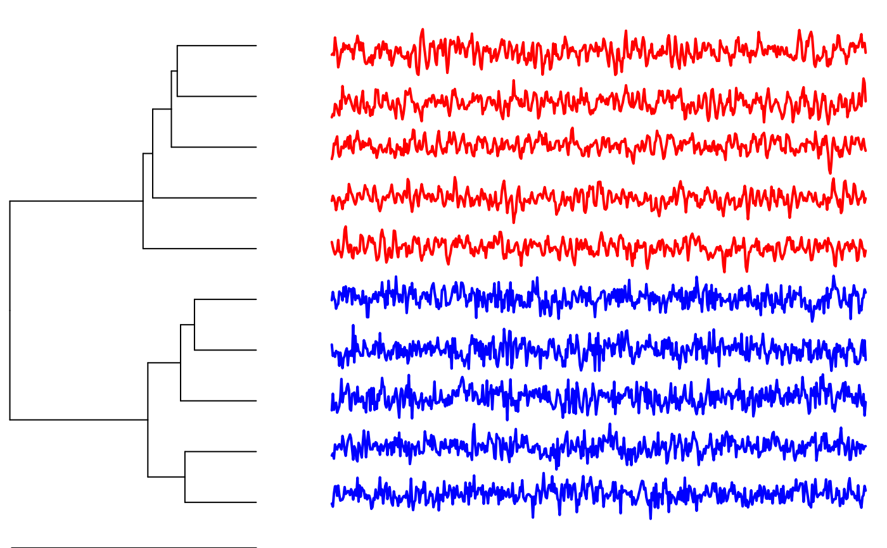

pdclust.RdHierarchical cluster analysis for time series. Similarity of time series is based on the similarity of their permutation distributions.
pdclust(X, m = NULL, t = NULL, divergence =
symmetricAlphaDivergence, clustering.method =
"complete")
<!-- %Plotting function for class 'pdclust' -->
# S3 method for pdclust
plot(x, labels=NULL, type="rectangle", cols="black",
timeseries.as.labels = T, p.values=F, ...)
<!-- % String representation for 'pdclust' -->
# S3 method for pdclust
str(object, ...)
<!-- % Print function for class 'pdclust' -->
# S3 method for pdclust
print(x, ...)In the univariate case: A matrix representing a set of time series. Columns represent different time series and rows represent time. In the multivariate case: A three-dimensional matrix with the first dimension representing time, second dimension representing multivariate time series, and the third dimension representing variables.
Embedding dimension for calculating the permutation distributions. Reasonable values range somewhere between 2 and 10. If no embedding dimension is chosen, the MinE heuristic is used to determine the embedding dimension automatically.
Time-delay of the embedding.
Divergence measure between discrete distributions. Default is the symmetric alpha divergence.
Hierarchical clustering linkage method. One out of c("complete","average","single").
For plotting:
A pdclust object
Optionally provide a vector of labels for the time series here.
One of c("triangle","rectangle") to choose the dendrogram style.
Specify line color either as string or as vector of strings
If FALSE, a vertical dendrogram is plotted using hclust. If
TRUE, a horizontal dendrogram is plotted with time series plots as labels.
Annotation of the cluster hierarchy with p values
Further graphical arguments.
For string representation:
A pdclust object
The function pdclust is the central function for clustering time-series in the package pdc.
It allows clustering of univariate and multivariate time-series.
If time-series have different length, the shorter time-series can be padded
with NAs to bring them to columns of the same length in an array or a
matrix.
Multivariate time-series can also be handled by pdclust. Therefore,
the data must be transformed into a three-dimensional matrix with the
dimenions representing (1) time, (2) entities, and (3) variables/channels.
Calls to pdclust return a pdclust object. There are
print, str and plot methods for pdclust objects.
Brandmaier, A. M. (2015). pdc: An R Package for Complexity-Based Clustering
of Time Series. Journal of Statistical Software, 67(5), 1--23.
Brandmaier, A. M. (2012). Permutation Distribution Clustering and Structural Equation Model Trees. Doctoral dissertation. Saarland University, Saarbruecken, Germany.
# generate 5 ARMA time series for the first group
grp1 <- replicate(5, arima.sim(n = 500, list(ar = c(0.8897, -0.4858),
ma = c(-0.2279, 0.2488)),
sd = sqrt(0.1796)) )
# generate 5 ARMA time series for the second group
grp2 <- replicate(5, arima.sim(n = 500, list(ar = c(-0.71, 0.18),
ma = c(0.92, 0.14)),
sd = sqrt(0.291)) )
# combine groups into a single dataset
X <- cbind(grp1,grp2)
# run clustering and color original groups each in red and blue
clustering <- pdclust(X)
plot(clustering, cols=c(rep("red",5),rep("blue",5)))
